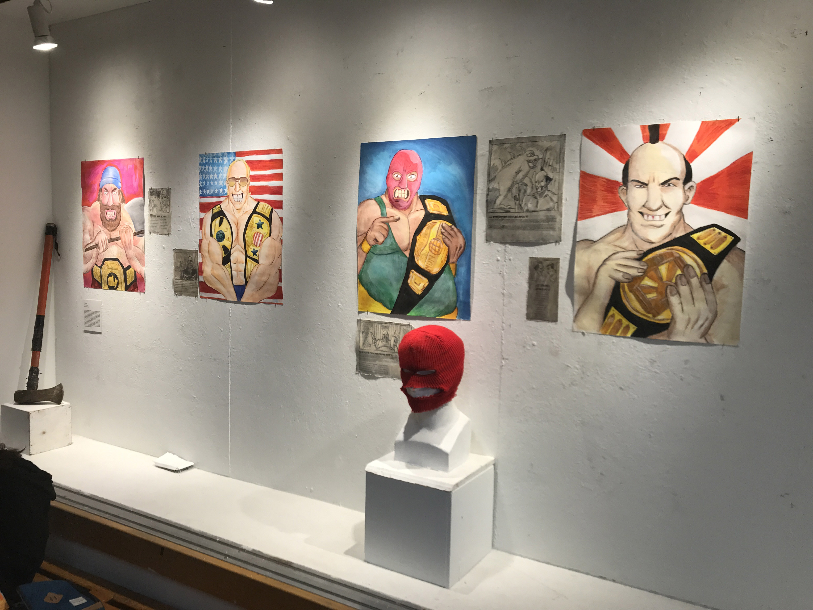
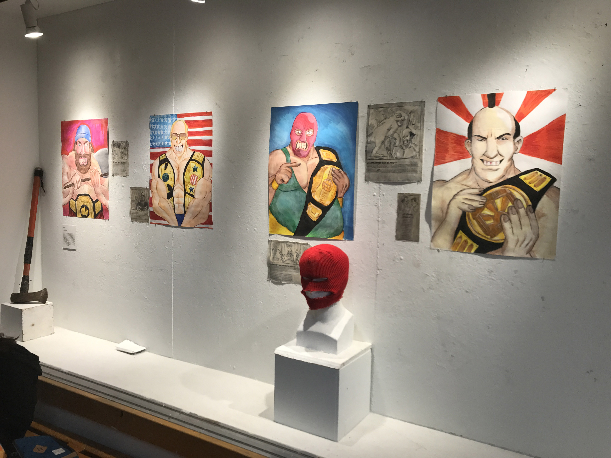

Pièce de résistance


Acrylique sur toile
L’œuvre Pièce de résistance a pour but de représenter littéralement la femme telle que l’expression vulgaire « pièce de viande », qui a comme définition : « une personne considérée comme un simple objet sexuel ou n’existant que pour la gratification sexuelle des autres ». On peut alors voir une pièce de viande à l’aspect féminin qui reprend la pose de La Grande Odalisque de Jean-Auguste Ingres, une œuvre souvent reprise dans le monde artistique. Cette femme-viande est autant ficelée que tripotée par les coupables ayant laissé leurs gants souillés d’offenses sur la planche à découper. Cette toile dénonce le comportement d’objectivation du corps féminin à travers les médias et la société moderne qui réduisent trop souvent la féminité à la sexualité.
Désuniforme

Bois, Tissus, acrylique
Pour ce projet, j’ai voulu réaliser une peinture sur un support inhabituel. La mise en place incite à une interaction entre l’art et la personne qui l’observe. Le public est donc invité à faire le tour de la structure pour y voir les différents angles et les jeux de perspective. J’ai utilisé plusieurs médiums pour offrir une variété et une profondeur à l’ensemble. Le tout est complété par les matériaux des toiles, qui sont eux aussi diversifiés et non traditionnels, puisqu’il s’agit de vieux draps et de vieilles nappes déjà colorés et texturés. Cela rend la pièce d’autant plus unique. J’aime également que les toiles soient au niveau du sol, car, en les contemplant de haut, on retire un peu le sérieux et le formel qui peuvent être associés à l’art. Les cadres assemblés forment un mur inégal, et le fait qu’ils soient positionnés sur le plancher invite presque le spectateur à ne pas avoir peur d’y toucher ou même d’y ajouter sa trace.
Les rebuts des eaux obsolètes

Acrylique sur toile
On montre souvent des images de montagnes de plastique flottantes pour encourager les gens à protéger la faune et la flore marines. J’ai pensé que montrer les espèces elles-mêmes ferait mieux l’affaire. De plus en plus, la grande barrière de corail blanchit, des milliers d’écosystèmes sont en déséquilibre, des milliards d’espèces sont éradiquées et nous haussons les épaules ; nous hochons la tête. Nous sommes en crise climatique depuis plus de quarante ans. Je juge inacceptable le fait que nous laissons ainsi tomber notre planète. Il est essentiel, plus que jamais, de considérer l’impact qu’ont nos pratiques sur la biodiversité. Il est évident qu’une personne seule ne peut pas bouleverser le quotidien de l’humanité, mais le changement naît grâce aux individus. Si on en parle encore, c’est que l’enjeu persiste. Soyez consciencieux.
Esthétisme dénué de sens
Acrylique sur toile
À mon avis, le processus artistique commence uniquement une fois qu’une œuvre est finie, qu’on en discute et interprète les multiples sens. Alors, plutôt que d’imposer la signification que ce tableau a pour moi, je vous invite à scruter les formes et les couleurs à la recherche d’une perception qui vous est unique. 10.000 Soldaten (10 000 soldats) Vendredi 16.02 Ça m'a fait froid dans le dos. C'est terrible. Ce soir, des prisonniers français, serbes et russes sont arrivés à pied de Glogau ; ils étaient 10 000. Les pauvres avaient l'air épuisés.
Life Loop
Vidéo
Life Loop est une vidéo où le sujet est similaire à la forme. C’est une boucle qui parle de boucles. Le projet est constitué de trois parties principales, qui représentent chacune un cycle de vie, exprimé avec des images qui me sont personnellement importantes. Mon projet raconte que le phénomène de la boucle est partout autour de nous. On le retrouve dans le système solaire, avec le mouvement des planètes, et dans toute espèce vivante qui naît, grandit, vieillit et meurt. La vie humaine en fait elle aussi partie. Nous pensons souvent qu'une boucle est une série d'éléments, qui se reproduit toujours de la même façon, mais c'est en fait un point initial et final qui est le même. Le reste est un chemin qui change de forme à chaque fois qu’il est réalisé. Avec mon œuvre, je veux illustrer que nous, en tant qu'humains, avons le pouvoir de changer la forme que prendra notre chemin, notre boucle, ainsi que notre vie avec les choix que nous faisons.
Greed
Acrylique sur toile
Greed, ou avidité/avarice en français, est un désir de l’argent immodéré par quelque chose ou quelqu’un, caractérisé par un refus de dépenser ses richesses. C’est un attribut très proéminent du capitalisme. Mon œuvre est une représentation de ce système qu’une grande partie de la population mondiale critique. Dans ces critiques, l’araignée est souvent utilisée pour représenter la classe bourgeoise et son avarice. Elle veut accumuler des ressources, mais ne veut pas répartir les richesses. Elle ne veut donc pas suivre les principes du capitalisme, qu’elle a elle-même créés. La toile illustre l’étendue de l’influence de la bête ainsi que de son réseau de corruption. Mon œuvre représente cette réalité que le monde dénonce : le désir de contrôle et cet instinct protecteur perverti pour la préservation des richesses qui ont été acquises with the blood, sweat and tears de la classe ouvrière.
Les gardiens des rues

Vivre à Montréal vient avec une tonne d’adaptations. Utiliser les transports en commun, éviter les nids-de-poule, emprunter les détours de signalisation, mais aussi prendre conscience de la réalité de l’itinérance. À mon arrivée en ville, je me rappelle avoir été chagrinée de constater la distance et l’indifférence que des citoyens pouvaient ressentir envers les personnes vivant dans cette situation. Comprenant que personne ne naît ou n’a comme objectif de vivre ainsi, j’ai voulu en savoir plus sur les évènements qui les ont conduits à la vie qu’ils ont aujourd’hui. J’ai voulu être une oreille à laquelle ils pourraient se confier sur le déroulement de leur journée, une personne qui ne les jugerait pas. J’ai voulu être simplement la personne qui leur donnerait le micro sous les projecteurs de l’exposition
Les travailleurs de l'ombre : hommage à ceux qui œuvrent dans l'ombre pour faire briller le monde
Photographie et montage vidéo
Mon œuvre cherche à rendre hommage aux travailleurs de l'ombre, ces personnes souvent méconnues qui ont pourtant une grande importance dans notre société. Ce sont les chauffeurs d’autobus, à qui vous donnez votre confiance et qui contribuent à la mobilité de la population, les horticulteurs, qui vous permettent d’avoir de la nourriture dans vos assiettes, les artistes, qui permettent une ouverture sur le monde autant réel qu'imaginaire, les barbiers et esthéticiennes, qui aident les gens à se sentir bien dans leur peau en prenant du temps pour eux, les commis de bibliothèque, qui se chargent du partage d’information culturelle et bien d’autres. Leur travail est essentiel, mais souvent ignoré. Pourtant, sans eux, notre monde ne fonctionnerait pas. À travers des entrevues et des photographies, mon œuvre permet de plonger dans l'univers de ces travailleurs de l'ombre et de découvrir leur travail, leur passion, leur engagement et ainsi, de leur rendre hommage. J'espère que mon œuvre vous permettra de mieux comprendre leur rôle dans notre société et qu’à votre tour, vous pourrez découvrir les merveilleuses personnes que j’ai eu la chance de rencontrer pendant la réalisation de ce projet.
Telle mère, telle fille


Plâtre, cire et peinture acrylique
Cette œuvre est la représentation d’une mère se tenant derrière son enfant. Cette représentation de la mère ayant des larmes de cire teintées de bleu coulant dans la tête de son enfant est une métaphore du traumatisme générationnel. Cela vient symboliser comment le parent transmet sa douleur à son enfant. Le haut de la tête de la mère est aussi ouvert pour montrer que la même chose lui est arrivée dans le passé. L’enfant a les larmes qui débordent de ses yeux pour signifier la répétition. L’enfant grandira pour ensuite prendre la place de sa mère. C’est une représentation de ce que la mère a été et de ce que l’enfant peut devenir. La cire est parfumée au jasmin et à la lavande, puisque ces fleurs symbolisent la pureté, et donc l’innocence. La sculpture est blanche pour faire contraste avec les larmes de cire de couleur bleue.
Καθαρτικός
Du grec ancien καθαρτικός, kathartikós (« purifiant ») → voir catharsie et catharsis. « Catharsis » est un projet, visant à la libération des traumatismes d’une vie. « Cathartique » est un adjectif qualifiant une action, un processus, un objet, etc. qui vient inciter à la guérison. D’une part, les dessins travaillés au fusain, au comté et à la sanguine représentent des métaphores, des analogies incarnant des traumatismes et les sentiments qui en découlent. D’autre part se retrouvent les photographies, celles-ci jointes aux dessins de manière à représenter une continuation, une évolution positive et un processus de guérison qui doit en découler. Ce processus accorde le courage à chaque individu de continuer d’avancer, malgré les blessures, malgré les souvenirs, malgré le monde gris dans lequel on vit.
Abri

Linogravure et peinture acrylique sur toile de coton, laine
Lors d’intempéries, je cherche une protection, un abri. Quelque chose de familier. Un ciel orangé, des branches qui bougent au vent, des racines qui m’enveloppent. Une couverture de terre et de laine rouge me réconforte. Les rayons de soleil sont comme un câlin d’un être proche. Ce refuge me permet de vivre. Je respire son air, ses poumons remplis d’une brise nordique. Malgré ses tempêtes, celle-ci prend soin de mon corps et de ma pensée. Je vis pour sa beauté. Je me noie dans ses yeux, dans sa voix et dans ses vents. Nature, verte de peau, elle me berce. Je l’habite et elle m’abrite sous son foulard tissé de coton. Elle me permet d’y rester des heures à étudier ses traces, son histoire qui se répète. Ses yeux coulent d’un bleu profond. Son étreinte s’affaiblit et sa peau devient glaciale. Elle est devenue mon nid. Je profite de sa chaleur corporelle et prie pour qu’elle ne me rejette pas. Je ne peux vivre sans elle. Nature, maintenant vêtue de gris.
A
« A » peut signifier plusieurs choses. Pour certains, ce n’est qu’une lettre et, pour d’autres, cela réfère à un mot : amour, amitié, abstraction, agressivité, apaisement, etc. Ou bien encore, cela peut évoquer des prénoms tels qu’Alice, Arthur, Ari ou Alexis. « A » est aussi une étape. C’est le début de quelque chose pour moi en tant qu’artiste. En jouant avec la texture et les couleurs, j’ai appris qu’il ne fallait pas avoir peur de montrer la peinture pour ce qu’elle est : une matière à créer. Représenter le réel tout en y ajoutant mon grain de sel, c’est ma façon d’y mettre un peu de fantaisie. Après plusieurs tentatives à suivre un plan défini, j’ai opté pour le lâcher-prise. J’ai laissé mon subconscient parler à ma place et j’ai réalisé que j’avais peint quelqu’un que je connaissais : une personne réelle dans un monde fantaisiste. Ce n’est peut-être que des couleurs sur une toile, des regards empruntés ou un ramassis d’émotions, mais, pour moi, c’est le début de quelque chose. Le début d’un amour et la continuité d’une passion.
Poussières photographiques
Acier mou
Mon œuvre est une représentation de l’éphémérité de la photographie. Cette dernière y est travaillée sous forme d'impression en sérigraphie sur de l'acier mou. Le but de l'œuvre est de la voir se détériorer rapidement. Elle a une double signification. Elle permet de représenter ce que j'ai appris durant mon parcours au cégep, soit par moi-même, soit à l'école. Le projet explore différents médiums : la photographie, la sérigraphie, le travail du métal et l'impression. Merci à Dominique Valade pour la réalisation du projet et aux autres profs qui m'ont enseigné leur passion.
That’s what she said
Argile et acrylique
Toutes faites à la main, ces cent vulves en argile sont le résultat d’un procédé méditatif pour moi. En me plongeant dans cette représentation féminine, je me suis interrogée sur ma place en tant que femme en 2023. Ma pratique artistique repose d’abord sur le féminisme, mais aussi sur tous les enjeux sociaux liés à l’identité féminine. Le travail du sexe, la sexualité, l’identité de genre, la place de la femme dans l’histoire et le féminisme intersectionnel ont été des sujets sur lesquels j’ai médité lors de la conception de ce projet. Il s’agit d’un hommage à toutes les femmes et d’une réclamation de notre place dans la société. Ce projet m’a permis d’approfondir ma démarche artistique et de continuer de promouvoir la place de la femme dans mes autres projets.
Champions
Techniques mixtes
Ce soir, mesdames et messieurs, ce mur appartient au monde de la lutte! Un fan fini de ce monde depuis un jeune âge, l’artiste présente ici un monde inventé de toute pièce s’inspirant des héros colossaux qu’il admirait tant. Faisant usage de la gouache et d’un trait au crayon de bois grossier, l’absurdité et l’aspect humoristique de ce sport théâtral sont mis de l’avant pour vous, le public, en illustrant quatre portraits d’hommes uniques ainsi que des souvenirs de leurs accomplissements créés en estampe. On rend non seulement hommage au monde de la lutte professionnelle, mais à ces quatre « légendes » de l’histoire. Que ce soit le terrifiant Canadien Terrence Tremblay, l’imposant narcissique américain Angus Supersteak, El Gordo Rojo ou bien le Grand Toyota, vous ne serez pas près d’oublier ces grandes figures mythiques !
Liscannor


Encre de Chine
Liscannor est le nom d’un village sur les côtes de l’Irlande et de cette série d’illustrations réalisées à l’encre de Chine noire, blanche et grise. Elles racontent une histoire entre une créature jouant un rôle paternel et un jeune garçon. À travers les œuvres, on retrouve ces personnages dans des contextes d’exploration de la nature. Autant on peut remarquer une profonde admiration des animaux dans leurs environnements dans les images ‘’Lafontaine’’ et ‘’Caterpillars’’, les œuvres ‘’Hunting’’ et ‘’Skulking in the rain’’ illustrent, quant à elles, le rôle que l’humain a par rapport à son environnement. Que ce soit la chasse ou autre, l’atmosphère de ces deux tableaux est beaucoup plus sombre. Cela représente une partie de l’apprentissage que le père donne à l’enfant : savoir comment prendre soin d’un animal et le respecter même après sa mort. L’encrage et la composition créent un effet de mémoire, des moments précis dans la vie de quelqu’un qui a été élevé par son père dans un milieu entouré par la nature.
Mon chemin Derelict
Techniques mixtes
L’idée pour ce projet était de créer une œuvre qui combine plusieurs médiums pour révéler un défi personnel. Je ne voulais pas que le 2D soit la dimension la plus présente, ce qui m’a amené à combiner la sculpture en bois avec la peinture. Je voulais aussi utiliser l’ensemble des techniques apprises dans mon parcours académique. Cela m’a poussé à utiliser des techniques mixtes plutôt que de choisir une technique particulière. C’est pourquoi j’ai décidé de créer un mobile avec plusieurs différentes œuvres flottantes qui portent sur le dessin, la peinture et la sculpture. Le but est de replonger dans l’enfance pour amener une imagination qui déborde d’idées et de couleurs. La musique, les livres, les jouets et les tissus sont des choses souvent introduites aux jeunes enfants qui sont ensuite délaissées avec l'âge. Avec ce projet, j’ai replongé dans les champs d’intérêt comme la musique, la nature, la lecture et la couture et j’ai décidé de représenter visuellement la multitude d’émotions et sentiments qu’elles peuvent apporter. La variété et la diversité des sujets cherchent à illustrer tout ce qui a été délaissé et abandonné avec le temps, mais qui doit rester en orbite autour de l’être humain.
Ressources épuisables

Impression de montages Photoshop
Le premier montage représente une ville de décadence où on est dépassé par l’information et la publicité, qui nous portent, qu’on le veuille ou non, à acheter toujours plus. Le deuxième montage montre l’envers du décor de cette surconsommation insatiable. Forcément, on oublie un peu qu'il y a un coût environnemental et humain lié à ce mode de vie. Les photos qui découlent des deux grandes images montrent que, même si cette réalité est omniprésente et d’autant plus angoissante, notre quotidien et nos petits soucis personnels prennent toujours plus de place. Autrement, toute cette anxiété ne serait pas saine. Puis, individuellement, nous ne sommes que spectateurs de notre futur.
Dans un grand boeing bleu de mer
Graphite sur papier
À travers mon parcours, je me suis découvert un intérêt pour l’influence qui s’exerce entre l’humain et les espaces qu’il habite. Chacun est transformé par les lieux dans lesquels il évolue, et ces lieux sont à leur tour transformés par les personnes qui les occupent. J’ai voulu aborder ce sujet dans une perspective très personnelle, c’est-à-dire par la relation que j’entretiens avec Montréal. Afin d’explorer plus en détail quelle est ma connexion à la ville, j’ai commencé par faire une série de photographies de lieux auxquels j’accorde une importance. Je les ai ensuite redessinées, ce qui m’a permis de réfléchir sur les raisons pour lesquelles j’ai un attachement à ces lieux, ce qu’ils ont formaté en moi et la manière dont ils évoluent dans le temps. Je présente mes dessins accompagnés par des textes dans des tiroirs de classeur pour faire référence aux recherches qui ont instruit mes réflexions. Chaque lieu dans une ville a une histoire et est revendiqué, et il est important d’être conscient de cette charge. J’utilise le crayon graphite, puisque ce médium appelle à la simplicité de la ligne et du dessin, ce qui me permet d’atteindre un résultat détaillé et sensible.
Débloque
Impression sur toile
J’ai ici entamé une recherche sur la libération de soi et sur le concept du lâcher-prise. Sur deux canevas vierges se retrouve une danse photographiée. Les images ont été imprimées et par la suite transférées sur le tissu. Cette technique révèle plusieurs imperfections qui ne sont pas contrôlées, mais tout de même acceptées. Voici où le lâcher-prise entre en jeu. C’est avec la danse que j’ai voulu exprimer mes émotions et mon besoin de libération intérieure. Chaque photo révèle un mouvement différent de l’autre. Ils sont tous importants. Avec cette œuvre, j’ai eu envie d’évoquer la légèreté. Elle n’est pas imposante, elle ne doit pas l’être. Doucement, j’invite le spectateur à la scruter. La petite lampe de mon enfance, qui projette une lumière chaude, accompagne mon œuvre pour donner envie d’y rester longtemps.
Biocénose


Encre sur papier teinté beige
Biocénose est une série de 16 dessins intuitifs où chacun d’entre eux représente une forme de vie avec des attributs très organiques, mais non humanoïdes. En écologie, le terme biocénose désigne un ensemble d’êtres vivants dans un même espace naturel. L’œuvre est donc un petit écosystème où vivent ces créatures. L’idée derrière le dessin intuitif est de se mettre le moins de barrières possible pendant son processus et qu’il soit naturel. Il y a quelque chose de très libérateur dans le fait de commencer un dessin en n’ayant aucune idée préconçue du résultat final, tout comme la planète Terre n’a pas de croquis de ce qu’elle fait pousser. C’est beau quand on laisse les choses se faire par elles-mêmes.
Pivoines et narcisses
Bois et broderie de soie
Ce projet s'inspire des broderies de soie de Suzhou, une région de Chine renommée depuis plus de 2000 ans pour ses traditions dans le travail artistique du textile. Ma broderie, faisant partie une forme d’art largement réalisée par les femmes, perpétue ces coutumes en utilisant la botanique comme source d’inspiration pour chaque détail présent sur le textile. Chaque élément représente également des symboles de la culture chinoise. La composition de narcisses et de pivoines à la droite du tissu, symbolise la longévité, la richesse et l'honneur, tandis que le papillon à gauche, représente la chance. En étant l'apanage des plus fortunés, ces valeurs établissent un lien entre la noblesse initiale de cette pratique et les racines culturelles du pays. En plus de son symbolisme culturel, cette broderie offre également une réflexion sur l'évolution du textile à travers le temps, sur ses fonctions ornementales ou utilitaires (vêtement, napperons, etc.). À travers cette broderie, je souhaite représenter l'histoire de l'art textile et de la préservation des traditions artisanales transmises par les femmes. Cette pratique a également une fonction économique et sociale, offrant aux femmes une voix et une reconnaissance par leurs pairs. Riche en symbolismes et en significations historiques et culturelles, cette œuvre est également un hommage à ces femmes et à leur contribution à l’esthétisme et à la pérennité de l’art.
Sans titre

Gravure et encre de Chine
Mon œuvre se base sur le journal intime que mon grand-père a tenu lorsqu’il était soldat en 1945 (il avait 17 ans). La guerre l’avait profondément traumatisé, étant donné qu’il était allemand, et on n’abordait jamais ce sujet dans ma famille. Lorsqu’il est décédé, ma mère a retrouvé son journal. J’ai eu la chance de le lire et j’ai pu découvrir une tout autre facette de mon grand-père. Un jeune garçon, essayant de clarifier ses pensées et de voir plus loin que la propagande nazie. Aujourd’hui je souhaite partager l’histoire d’un adolescent forcé à combattre dans une guerre, où refuser aurait signifié sa mort. J’ai choisi cinq passages de son journal, que j’ai illustré par des gravures. On y retrouve un garçon transporté d’un coin de l’Allemagne à l’autre pour combattre, un garçon innocent qui va au cinéma les jours de permission ou encore, un garçon terrifié à la vue des soldats prisonniers. Sous chaque illustration se trouve le passage du journal qui y correspond. Voici l’histoire de Kurt Jung.
Altération


crylique sur toile
Le symbolisme des déchets qui altèrent la nature, c’est le thème que j’ai voulu exploiter dans cette œuvre. Je me suis inspiré des paroles de la chanson Revolution de Dub Inc. qui parlent de la destruction de notre planète causée par l’être l’humain : On a détruit des forêts entières/ Et on a extrait l’or de la mer/ Et maintenant tout s’effondre/ […] / Aux vues des conséquences, il n’y a pas de rédemption/ Anticiper la suite face à la pollution/ Si proche du précipice, il faut que nous stoppions/ […] / Avant que tout s’effrite, prenons le bon tournant 1. (l.27-54) Mon intention, en m’inspirant de ces paroles, était de faire passer le message que nous, les êtres humains, devons cesser de polluer afin que l’on puisse vivre dans un monde meilleur, où les conditions de vie sont plus favorables. Mon but était de créer un environnement qui ne semble pas altéré par les déchets, car la nature reprend toujours son cours. Ce paysage de plage et de mer contient plusieurs éléments en plastique. Des morceaux en carton dépassent du cadre de la toile, et les déchets utilisés créent différents volumes et de multiples textures. Tout cela est dissimulé dans la peinture. Ainsi, la nature prédomine sur l’ensemble des déchets.
Mon chemin


Bois, toile
Un portrait, une image, un symbole. Mon œuvre, c’est la réalisation d’un cheminement, c’est le résultat de ce que mon expérience m’a permis d’accomplir. C’est la représentation artistique d’années de découvertes, d’apprentissage et d’évolution dans ma pratique. C’est un cadre où tous les figures et passages importants de ma vie sont représentés par des objets associés à des souvenirs, à des personnes et à des évènements significatifs, comme un rappel que mon art est fait de tout ce qui a parsemé mon chemin. Ce cadre porte et affiche quatre toiles créées selon l’inspiration du moment; elles sont le produit de l’évolution de ma pratique artistique jusqu’à maintenant. Mon œuvre, c’est l’aboutissement d’un parcours qui s’achève pour me permettre de le continuer sous d’autres formes.
Bibele
Techniques mixtes
Bibele, (prononcé bibeleu,“ma poulette” en alsacien) je suis allée la chercher au plus profond de mes racines. Version matérielle de cette sensation douce, chaude et parfois brûlante; le confort. Elle est constituée de bricoles et babioles qui m’ont introduit enfant dans la sphère artistique. C’est un retour aux sources et aux choses simples. Un câlin visuel de moi à moi de moi à toi Bidule rassurant pour les yeux, pour le corps. Contemple quelque chose de paisible le temps d’un instant oublies tes bobos un petit moment
Bisous
UNIES
Acrylique sur toile de coton
Les femmes et les personnes assignées comme femmes à la naissance sont souvent jugées sur des standards précis. On regarde la grosseur de leurs seins, la taille de leurs hanches, de leurs lèvres, de leurs yeux pour juger si elles sont « belles » ou non. Ces standards sont complètement faux et irréalistes. Chaque personne est différente et porte une beauté unique. UNIES présente l’envers du décor de la beauté féminine. On observe d’abord un corps et un visage représentant les standards de beauté typiques américains en bleu, couleur qui représente le froid et la tristesse. Ensuite, le spectateur est invité à entrer dans l’œuvre où s’y trouvent plusieurs femmes et personnes assignées comme femmes à la naissance. La couleur rouge, qui représente la chaleur et l’amour, ainsi que les lumières donnent une ambiance douce et chaleureuse. Cela incite les invités à vivre un moment de proximité avec l’œuvre et avec les personnages peints à l’intérieur. Durant ce moment, tous se côtoient dans un lieu sécurisant et dans l’acceptation. UNIES est donc une œuvre féministe qui cherche à illustrer que la beauté est un concept et qu’elle ne doit pas être définie par des standards. Les personnes qui sont nées dans un corps féminin ou qui s’identifie comme femme doivent s’unir pour combattre les normes et devenir des personnes UNIES.
Brutus
Bois, argile et peinture acrylique
Je fais de l’art au Cégep du Vieux Montréal depuis presque deux ans, et c’est la première fois que j’ai complètement carte blanche pour la réalisation d’un projet. J’ai cependant veillé à mettre en application les précieux conseils de mes professeurs, car mes œuvres précédentes ne se sont pas toutes révélées être de grandes réussites. Pour ce projet, j’ai choisi de me concentrer sur un rendu visuel joli et plaisant, se fondant davantage sur des considérations esthétiques qu’un concept élaboré. Malgré le désir de manipuler mon œuvre, cet échiquier est fragile et n’est pas fait pour jouer une partie d’échecs. C’est un objet esthétique et son unique aspiration est d’être une œuvre d’art. J'utilise des matériaux bruts et naturels et me donne pour tâche de les transformer. Je suis fier de vous présenter mon projet de finissant en production, en espérant que, malgré son thème, il ne se soldera pas par un échec... Je tiens à remercier Lysandre Cyr pour l'aide qu'elle m'a apportée dans la réalisation de mon œuvre.
Mon corps
Crochet et acrylique sur toile
Mon corps me semble parfois étranger. J’ai grandi en apprenant à le critiquer et à le trouver anormal. Pourtant, il fait partie de moi et je fais partie de lui. Nous sommes indissociables, nous sommes un tout. On m’a dit de le mouler, de le rabattre, de le modifier. J’ai essayé, vraiment essayé, à m’en épuiser, à en briser ma confiance et à en pleurer des soirées entières, mais ce que l’on me demandait n’était ni atteignable ni sain. J’essaie aujourd’hui d’accepter mon corps, peu importe son apparence. Mélangeant crochet et peinture acrylique, cette œuvre cherche à recoller les morceaux, appliquer de la douceur et réconcilier les points de vue.
Take care of yourself
Techniques mixtes
Mon œuvre est un polyptyque se présentant en cinq panneaux. On y voit diverses plantes sortant du papier, se fanant de plus en plus, présentées dans un paysage nuageux. Des papillons tournent autour de ces mêmes fleurs avant de partir, désintéressés. Le portrait est laissé anonyme et androgyne pour que l’on puisse plus facilement s’y identifier. Ces panneaux représentent une progression. Il est possible de faire un parallèle entre ces images et la santé mentale. Si l’on ne s’en occupe pas, elle va se détruire, tout comme ces fleurs qui semblent avoir été négligées. Chacune des planches montre un état pire que le précédent et la douleur que l’on peut subir lors de ces moments mentalement compliqués. Chaque détail a son message et sa place dans ces images. Pour moi, les différentes fleurs et ajouts ont un sens ancré dans le langage de la santé mentale. Je vous souhaite une magnifique journée, et prenez soin de vous, c’est important ♥.
Musicothèque

Techniques mixtes
La musique a toujours été thérapeutique pour moi. Elle m’accompagne partout et en tout temps : dans mes moments difficiles ou quand j’ai besoin d’un petit boost de confiance, quand j’étudie ou quand je marche. Elle m’aide à étudier, à me changer les idées ou à m’endormir. Elle me sert un peu d’album souvenir aussi. J’associe beaucoup de chansons à des moments ou des périodes précises dans ma vie. Dans cette œuvre en trois parties, tous les vinyles, les affiches aux murs et les CD suspendus représentent des chansons ou des albums qui m’ont suivi durant mon parcours collégial ces deux dernières années. Pour représenter ces musiques visuellement, je me suis inspirée des pochettes d’albums, des thèmes abordés dans les chansons, des émotions que ces dernières me font ressentir, etc. Puis, pour l’assemblage de mon installation, je me suis inspirée des magasins de disques typiques. Bienvenue dans ma musicothèque!
Monde intérieur
Armoire en bois et éléments de sculpture faits à la main.
Le système sur lequel notre société est construite est instable et ses failles sont de plus en plus apparentes, que ce soit le changement climatique, le climat politique ou économique. Il est facile de se perdre dans la négativité et de redouter le futur, de penser que nos actions quotidiennes importent peu face à la grandeur des choses. Dans cette situation, il est important de continuer à nourrir notre monde intérieur. Il faut trouver ces petites choses qui nous motivent à continuer. Continuons de nous tenir debout avec ce qui nous tient à cœur. Continuons à être activiste pour les causes qui résonnent avec nos valeurs, mais sachons quand tracer la ligne entre notre personne et ce qui nous surpasse. Ce qui se passe dans le monde extérieur est parfois hors de notre contrôle. Il faut apprendre à protéger notre monde intérieur avant tout. Nous sommes sur cette terre peu importe ce qui lui arrive. Mieux vaut en profiter :)
Plonger en soi
Techniques mixtes
Qui sommes-nous à l’intérieur ? Dans mon œuvre, je tente de répondre à cette question en explorant ce que je cache sous ma carapace de chair et d’os. Cette petite sculpture de moi-même est protégée par ce qui est à la fois une armure et une prison ; un endroit qui est aussi étouffant que confortable. Avec ce corps assis dans mes entrailles, je viens représenter mon anxiété attachée comme un loup vicieux à ma tête, mes insécurités cousues sur mes vêtements et ces aspects contrastent entre le confort et l’inconfort d’une cage thoracique parée d’un nid de branches ornementées. Pour certains, la solitude devient effrayante. Moi, je ne fais que l’apprivoiser, et si, coincée dans une foule, je me sens écrasée par les vagues humaines, je me cacherai derrière mes côtes, je me blottirai entre mes organes et j’y retrouverai mon petit coin de silence.
Si ma mère ne m’avait pas connu


Acrylique sur toile
La perte d’une âme créative rend laid. Ta présence, ton réconfort et ton amour font de toi une mère; tu es la source de la création. Ce petit bourgeon qui résiste au fond de toi, aurait-il pu fleurir si tu ne m'avais pas conçu ? Tu aurais sans doute eu la liberté de créer autre chose. J’ai fait trois tableaux, puisque je t’aime trois fois plus que tu n'aimes Henry Cavill et, telle une déesse, tu nais chaque matin plus jolie que la veille. Je te dédie cette création. Pour toi maman, Je peindrai la lune.
Tea Party
Techniques mixtes
L’art prend du temps. Le temps est précieux. C’est pourquoi Tea Party est un projet spécial. L’œuvre a requis beaucoup de temps, beaucoup de précision, beaucoup de préparation, mais n’a pas pris une seule minute de désagrément. Chaque heure passée sur ce projet relevait de la passion pour la miniature et le détail. Chaque détail, chaque meuble, chaque personnage a été fait avec bonheur et enthousiasme pour le résultat à venir. Toutefois, ce n’est pas seulement le résultat qui importait ; il s’agissait également du processus. Devoir se pencher pendant des heures sur des assiettes qui racontent ce que chaque personnage peut manger ; passer plusieurs jours sur des tables rondes transparentes pour permettre de voir ce qu’elles cachent tout en rappelant les tables d’extérieur en été ; prendre le temps de peindre des livres individuels qui sont placés sous la surface transparente d’une table basse. Le tout pour créer une œuvre qui m’appartient, qui est pour l’autre, sans pour autant n’être que pour un seul et unique spectateur. L’Art ne m’appartient pas, car bien qu’il relève de l’interprétation de l’artiste, il relève également du public. Je n’ai pas à guillotiner mon bonheur devant le public pour être un artiste.
Ralph Rumen collection printemps-été 2029
Tricot avec sacs de lait en plastique
Ralph Rumen collection printemps-été 2029 est constituée d’un vêtement deux pièces, d’un cardigan et d’une mini-jupe faits de sacs de lait de 4L. Cela fait référence à la fois à l’industrie de la mode, qui est un pollueur important aujourd’hui, et à l’industrie du lait et de la viande par le choix du matériau dans cette œuvre. La palette de celle-ci est plutôt froide, avec de petits accents de rouge. La maille tricotée piquante et les ordures ficelées rajoutent beaucoup de texture au vêtement, autant visuellement que sensoriellement. Le côté extravagant de l’ensemble du projet donne une allure de défilé de mode. Cela nous rappelle les grandes entreprises qui veulent nous vendre les dernières tendances en nous cachant les effets de la surconsommation. La Terre peut en prendre jusqu’à un certain point, et ce point sera atteint en 2029.
Praeteritum, Praesens, Futurum


Acrylique sur toile
Praeteritum : Le passé, ce qui a été, précédant un moment donné. Il est solidement entaillé dans la pierre. Ses contours sont nets, lisses. Rien ne peut le changer. Toutefois, le cerveau humain ne retient pas chaque détail, il manque de résolution. La chaleur familière de son étoile falsifie les impressions. Praesens : Le présent, ce qui existe réellement. La quantité énorme de détails peut créer une souffrance de grandeur spectaculaire. La chair à vif, la peau se régénère constamment pour déterminer le passé. Futurum : Le futur, ce qui n’est jamais atteignable. Une utopie possible qui ne contient jamais détail ou authenticité. Il est illusion, déception qu’on peut construire. Cette œuvre est une représentation du cycle constant ressenti par la psyché dite défectueuse et dysfonctionnelle.
Bleu
Acrylique sur toile et plâtre
Cette œuvre est la représentation de ce que je ressens lorsque je marche devant une multitude de personnes. J’ai un sentiment d’angoisse, un sentiment qui m’envahit complètement, un sentiment qui me donne envie de me cacher, de fuir et d’être invisible. Lorsque je me sens ainsi, je ne regarde personne par peur qu’ils me regardent à leur tour. La palette de couleurs est inspirée de l’expression anglaise « I feel blue », qui veut dire « je me sens triste ». C’est ce qui, pour moi, se rapproche de la tristesse que peut apporter l’angoisse. Les éléments 3D qui entourent la peinture sont des doigts : l’index, le majeur et l’auriculaire. Ceux-ci représentent le sentiment accablant d’angoisse qui m’envahit. Les autres éléments en relief devant les yeux sont en relation avec une phrase que je me répète souvent pour me calmer. Cette phrase est aussi le nom de l’œuvre : « Si je ne les vois pas, ils ne me voient pas ».
ÂMES
Impressions photo et acrylique sur MDF
J’ai constaté que dans la société d’aujourd’hui, les gens veulent se fondre dans la masse, rester neutres par peur d’être jugés, rejetés, persécutés, etc. Mais j’ai vite compris qu’une fois qu’on apprend à connaître une personne, qu’une fois qu’on saisit l’opportunité d’aller à sa rencontre et qu’on la côtoie au quotidien, on finit par découvrir un immense et vaste arc-en-ciel de couleur enfoui sous sa carapace. Dans cette série de diptyques, j’ai sélectionné des personnes que je trouve inspirantes et qui ont toutes, d’une manière ou d’une autre, marqué ma vie. Je les ai d’abord photographiées avant d’appliquer un filtre monochrome pour rappeler la neutralité, la banalité et l’ennui. Ensuite, j’ai choisi des couleurs avec une certaine symbolique et les ai agencées avec des mouvements et des techniques variées pour créer des abstractions qui représentent chacune des personnes choisies.
État d’âme


Techniques mixtes
L’histoire que raconte ce livre a plusieurs symboles cachés. Vous ne pouvez les comprendre entièrement que si je vous en donne la clef, et c’est ce que je m’apprête à faire… Tel un cycle, chaque saison représente une étape de ma guérison. L’été pour la prise de conscience, l’automne pour les doutes qu’amène la souffrance, suivi de près par l’hiver, pour les périodes les plus sombres. Puis arrive le printemps, plein d’espoir et de vie. Ainsi, le cycle recommence jusqu’à ce que je sois rétablie. D’un lieu à l’autre et d’une rencontre à l’autre, je ressens des émotions bien différentes. Ils sont l’image que je me suis faite de personnes, d’évènements ou de parties de moi-même. Chaque élément est un symbole qui peut être interprété de toutes sortes de manières. Maintenant que vous avez la clef en votre possession, vous pouvez désormais ouvrir la porte.
1.Léopold, Rosanna, Achille et Victor, 2.Victor, Rosanna et Achille, 3.Rosanna devant Cannelle, 4.Wouf Wouf, 5.Rosanna sur la toilette

Acrylique sur toile
Rassemblant des anecdotes de mon passé, mon œuvre exprime tous les petits moments que l’on se remémore avec un esprit brouillé par le temps. Cette série de peinture constitue une matérialisation de l’esprit et de la mémoire qui recrée nos moments d'enfance de façon incertaine et brouillée. En utilisant le flou comme élément pictural principal, mon œuvre tente de plonger le spectateur dans une atmosphère de nostalgie et de mélancolie. Avec l’ambiguïté des images représentées, ces peintures cherchent à créer une confusion entre la réalité et le rêve. Pour ajouter un sens personnel à l’œuvre, j’ai choisi de travailler avec mes propres photos de famille. On y retrouve quatre personnages importants: Victor, Achille, Léopold et moi, Rosanna. Certains tableaux expriment des moments passés en famille et d’autres, des faits plutôt anecdotiques et quotidiens. En y ajoutant quelques éléments culturels québécois, j’espère aussi rejoindre le spectateur dans la nostalgie.
Sans titre
Acrylique sur toile et faux cuir
Par le biais de mon œuvre, j’ai tenté d’exprimer un rejet des pressions sociales qui mènent au surmenage : le bien-être mental au péril de la réussite économique. Je me suis inspirée d’artistes expressionnistes tels qu’Otto Dix et Edvard Munch. Comme ces artistes, mon œuvre se définit par un travail à l’état brut, c’est-à-dire que je mets davantage l’accent sur mes émotions et mes sentiments que sur un effet miroir du réel. J’ai décidé de représenter un homme et une femme à qui un boulet a été attaché autour du cou. Ces boulets d’apparence brute sont maintenus en l’air, malgré leur poids, ce qui fait en sorte que la femme ne peut pas se coucher sans être étranglée. De ce fait, elle est épuisée d’être debout, mais l’homme à ses côtés ne l’est pas autant et il la soutient, afin qu’elle ne tombe pas. De plus, les visages fantomatiques attachés aux boulets qui flottent tels des ballons gonflés à l’hélium cherchent à exprimer la détresse et l’angoisse. C’est le résultat de l’accumulation de cailloux, qui sont, en quelques sortes, un rappel de toutes ces personnes qui sont victimes d’un épuisement mental.
Le Banquet


Acrylique sur bois
Devant vous se trouve un banquet — une scène montrant toutes sortes de provisions prêtes à être cueillies : des baies mûres et juteuses, des fleurs odorantes, des champignons blancs comme l’ivoire… Bref, un régal en pleine nature. Il y a un seul problème : toutes les plantes et champignons illustrés sont hautement toxiques, et parfois même mortels. Le crâne de chevreuil, caché derrière les deux grandes digitales, en fait le présage. L’image devant vous représente une nature qui est vivante, verdoyante et enchanteresse, mais qui peut aussi, par manque de méfiance, vous mener à votre perte. Les apparences sont trompeuses — telle est l’une des règles, non seulement de la cueillette, mais aussi de la vie en général. Que vous interprétiez ce tableau de manière littérale ou que vous y accordiez une signification personnelle importe peu. L’idée reste la même : il faut demeurer vigilant.
Elenge Muasi ya Congolaise
Plâtre, peinture acrylique
Soki ozali kuluka makambo, oyo etali mboka ya République démocratique ya Congo, na bitando oyo to bengi internet. Maye ma kobima liboso ezali loboma, bowumbu, mpe moyibé ya nkita. kasi mboka ayo ezali mpe na makambu ya kitoko neti, batu nabizaleli wabango, mabele kitoko na nkita ebelle koleka ba mboka nionso na mokili. Kasi ba panzi sango ya mbokka mindele balobelaka yango te na elembo na ngai na Sali muasi oyo congolaise na langi ya olo, pona kolakisa maye manso mingi oyo mayebani te ya mboka oyo démocratique ya Congo. Meurtres, génocides, esclavages et exploitations sont quelques éléments qui apparaissent lorsqu’on recherche la République Démocratique du Congo sur internet. Pourtant, ce pays est bien plus que cela. Il y a des gens qui y vivent et partagent une culture puissante. De plus, il se trouve sur une terre magnifique pleine de richesses. En fait, nous pourrions dire que c’est l’un des pays les plus riches du monde, dans tous les sens du terme. Pourtant, les médias occidentaux n’en tirent aucune positivité. Dans mon œuvre, je représente une femme congolaise peinte en or, dans laquelle j’essaie de montrer des nombreux faits sous-représentés de ce pays.
Sans titre
Acrylique sur toile
Le polyptyque qui vous est présenté est composé de quatre peintures. Chacune d’entre elles représente la vision de mondes loin du nôtre, oubliés ou inconnus par l’humanité. Tenter de comprendre les lois qui fondent ces mondes imaginaires suscite en général plus de questions que de réponses. En observant les peintures, il est évident que l’on cherche à comprendre ce qui se trouve devant nos yeux. Il est tout à fait naturel d’essayer de nommer les choses, d'étiqueter ce qui est nouveau. Pour ce faire, nous tentons inconsciemment de faire des liens entre ce que nous connaissons déjà et l’inconnu qui se trouve sous nos yeux. En qualifiant de méconnu ce qui se trouve devant nous, nous ne nous sentons pas en sécurité, car il n’y a rien qui nous effraie plus, rien qui nous met plus mal à l’aise, qui nous rend plus inconfortables que l’inconnu. Pourtant, c’est en plongeant au plus profond de ce dernier, en nous ouvrant à ce qui est nouveau, que nous pouvons espérer grandir. Voilà mon jeu d’artiste.
Parasite Plastique


Techniques mixtes.
Dans cet univers où le plastique est rendu organique, l'artificiel et le naturel ne font qu'un. L'humain devient alors un animal, une bestiole, un parasite. Je veux explorer l’aspect ironique de notre peur et haine envers les virus et les espèces envahissantes, même si, selon certaines définitions, l’humain serait un parasite de son environnement qu’il transforme et qu’il détruit. De même, notre peur grandissante des virus informatiques et notre crainte pour la sécurité de nos informations personnelles témoignent d’un monde où les limites entre la réalité et le virtuel sont de plus en plus floues. Il faut prendre conscience de nos actions et des informations que nous censurons ou partageons, qui transmettent nos idées et infectent nos pensées et nos corps. Quelle est notre responsabilité par rapport à nos opinions, à nos habitudes quotidiennes, à l’abus de production et à la marchandisation de nos ressources et de la vie ? Occupés à nous distraire et à nous définir une identité normative, nous fermons les yeux sur les déséquilibres qui affectent les populations et qui les obligent à migrer, augmentant ainsi autant les possibilités de transmission de maladies que la quantité de virus informatiques — source de notre hypocrisie. À travers mon assemblage, je cherche à représenter notre société actuelle et future dans une beauté superficielle où le plastique et le numérique sont notre environnement et consommation
BC01
À la recherche d’un monochrome imparfait, cette œuvre explore les couches de textures qui s’accumulent au fur et à mesure du travail. Aspirant à s’attarder sur des reliefs d’une banalité qui peut parfois sembler absolue, ce diptyque a pour intention d’amener le regard de l’observateur sur les détails que peut constituer une matière. Une recherche paradoxale du complet dans l’incomplet.
Renaissance


Acrylique sur toile
Renaissance est un témoignage de redécouverte de soi et d’une reprise de pouvoir à la suite d’une relation amoureuse malsaine. Dans le tableau, la nudité exprime une vulnérabilité assumée, et l’angle en contre-plongée du corps révèle une confiance en soi. Cette œuvre est mon émancipation, ma façon d’officialiser mon parcours de jeune femme en reconstruction. Je vise à ce que mon tableau rappelle à la spectatrice ou au spectateur de ne jamais laisser une autre personne tamiser leur lumière, leur potentiel, et toutes les petites choses qui la/le rendent unique. Protège ton énergie. « [...] Shades of rose, cadmium, and moss, colors that seem to generate light. », Just Kids, Patti Smith.
La soirée de financement de l’exposition était un événement hybride : le Musico-bazar! Les spectateurs étaient invités à un micro ouvert, auquel ils étaient libres de participer, présentant des performances musicales et littéraires. Il y avait également une friperie à la disposition de ceux qui voulaient bien en profiter. Plusieurs étudiants d’arts visuels vendaient également des illustrations, des impressions et des autocollants. Elle s’est clôturée par une performance de DJ et un plancher de danse. Le tout fut couronné d’un franc succès, tant par la participation financière que physique et créative de tous ceux qui étaient présents.
On vous en remercie!
Performeurs présent:
Nous voulons remercier chaleureusement Mathieu Beauséjour et Stéphane La Rue pour leur encadrement et leurs judicieux conseils à toutes les étapes de ce projet. Nous sommes reconnaissants du travail technique effectué par l’équipe des techniciens (Amélie Roy, Chloé Fortier-Devin, Lysandre Cyr, Vincent Jolicoeur, Antoni Michalik et Jules Belec) et le corps enseignant du département d’arts visuels ainsi que par Steve Dubé pour son support au montage et à la gestion de l’Agora. Nous remercions également le comité des finances pour avoir si bien encadré le financement de l’expo, le comité des communications pour leur travail de graphisme et de promotion incomparable, le comité du vernissage pour avoir organisé non seulement une, mais bien deux soirées mémorables, le comité cartels pour leur rôle crucial à la présentation des travaux ainsi que le comité site Web pour leur magnifique synthèse en codant le site sur lequel nous sommes.
Finalement, nous souhaitons remercier tous ceux qui nous ont supporté, de près ou de loin, dans ces trois mois de travail acharné: familles, amis, collègues et visiteurs de l’exposition. Merci beaucoup. (ツʃ♡ƪ)